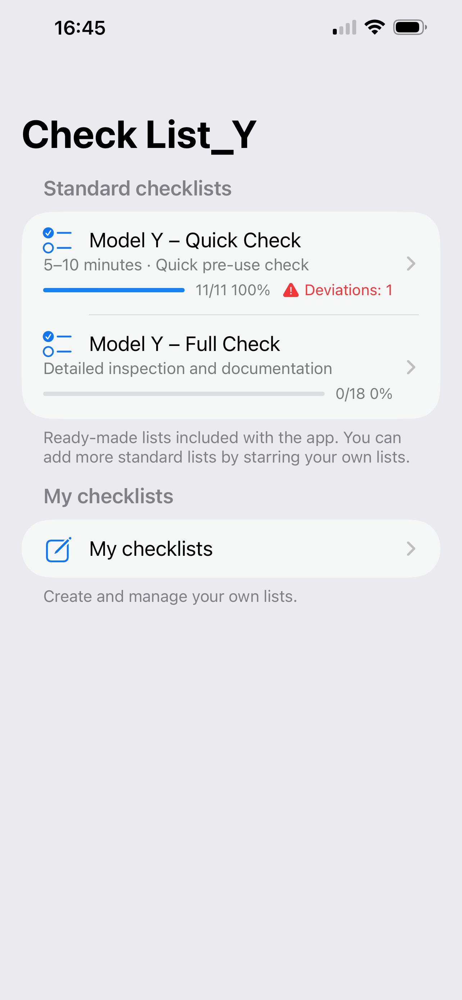

Delivery inspection checklist
Check List_Y
A simple, focused app to inspect a car at delivery. Go through the vehicle step by step, document issues with photos, and generate a complete PDF report directly on your phone.
For iPhone. No account. No sign-in.

Now available on the App Store.
What’s new
- Landing page checklist summaries (progress %)
- Subtle “Not OK” indicator with deviation count
- Improved launch performance and responsiveness
Main features
- Step-by-step delivery inspection checklist (useful for Model Y)
- Mark each item as OK or with an issue
- Add notes and up to three photos per checklist item
- Create your own custom checklist items
- Verify that all required equipment is included
- Generate a PDF report that can be saved or shared